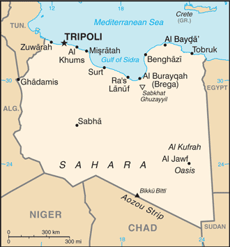
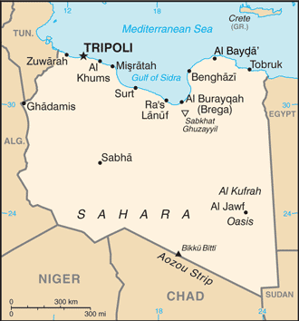

Africa :: LIBYA
Introduction :: LIBYA
-
The Italians supplanted the Ottoman Turks in the area around Tripoli in 1911 and did not relinquish their hold until 1943 when they were defeated in World War II. Libya then passed to UN administration and achieved independence in 1951. Following a 1969 military coup, Col. Muammar al-QADHAFI assumed leadership and began to espouse his political system at home, which was a combination of socialism and Islam. During the 1970s, QADHAFI used oil revenues to promote his ideology outside Libya, supporting subversive and terrorist activities that included the downing of two airliners - one over Scotland, another in Northern Africa - and a discotheque bombing in Berlin. UN sanctions in 1992 isolated QADHAFI politically and economically following the attacks; sanctions were lifted in 2003 following Libyan acceptance of responsibility for the bombings and agreement to claimant compensation. QADHAFI also agreed to end Libya's program to develop weapons of mass destruction, and he made significant strides in normalizing relations with Western nations.Unrest that began in several Middle Eastern and North African countries in late 2010 erupted in Libyan cities in early 2011. QADHAFI's brutal crackdown on protesters spawned a civil war that triggered UN authorization of air and naval intervention by the international community. After months of seesaw fighting between government and opposition forces, the QADHAFI regime was toppled in mid-2011 and replaced by a transitional government known as the National Transitional Council (NTC). In 2012, the NTC handed power to an elected parliament, the General National Congress (GNC). Voters chose a new parliament to replace the GNC in June 2014 - the House of Representatives (HoR), which relocated to the eastern city of Tobruk after fighting broke out in Tripoli.In October 2015, the UN Special Representative of the Secretary General (SRSG) to Libya, Bernardino LEON, brokered an agreement among a broad array of Libyan political parties and social groups - known as the Libyan Political Agreement (LPA). Members of the Libyan Political Dialogue, including representatives of the HoR and ex-GNC, signed the LPA in December 2015. The LPA called for the formation of an interim Government of National Accord or GNA, with a nine-member Presidency Council, the HoR, and an advisory High Council of State that most ex-GNC members joined. The LPA’s roadmap for a two-year transition to a new constitution and elected government was subsequently endorsed by UN Security Council Resolution 2259, which also called upon member states to cease official contact with parallel institutions. In January 2016, the HoR voted to approve the LPA, including the Presidency Council, while voting against a controversial provision on security leadership positions. In March 2016, the GNA Presidency Council seated itself in Tripoli. In 2016, the GNA twice announced a slate of ministers who operate de facto, but the HoR did not endorse the ministerial list. HoR and ex-GNC-affiliated hardliners continued to oppose the GNA and hampered the LPA’s implementation.
Geography :: LIBYA
-
Northern Africa, bordering the Mediterranean Sea, between Egypt, Tunisia, and Algeria25 00 N, 17 00 EAfricatotal: 1,759,540 sq kmland: 1,759,540 sq kmwater: 0 sq kmcountry comparison to the world: 18about 2.5 times the size of Texas; slightly larger than Alaskatotal: 4,339 kmborder countries (6): Algeria 989 km, Chad 1,050 km, Egypt 1,115 km, Niger 342 km, Sudan 382 km, Tunisia 461 km1,770 kmterritorial sea: 12 nmnote: Gulf of Sidra closing line - 32 degrees, 30 minutes northexclusive fishing zone: 62 nmMediterranean along coast; dry, extreme desert interiormostly barren, flat to undulating plains, plateaus, depressionsmean elevation: 423 melevation extremes: lowest point: Sabkhat Ghuzayyil -47 mhighest point: Bikku Bitti 2,267 mpetroleum, natural gas, gypsumagricultural land: 8.8%arable land 1%; permanent crops 0.2%; permanent pasture 7.6%forest: 0.1%other: 91.1% (2011 est.)4,700 sq km (2012)well over 90% of the population lives along the Mediterranean coast in and between Tripoli to the west and Al Bayda to the east; the interior remains vastly underpopulated due to the Sahara and lack of surface waterhot, dry, dust-laden ghibli is a southern wind lasting one to four days in spring and fall; dust storms, sandstormsdesertification; limited natural freshwater resources; the Great Manmade River Project, the largest water development scheme in the world, brings water from large aquifers under the Sahara to coastal citiesparty to: Biodiversity, Climate Change, Climate Change-Kyoto Protocol, Desertification, Endangered Species, Hazardous Wastes, Marine Dumping, Ozone Layer Protection, Ship Pollution, Wetlandssigned, but not ratified: Law of the Seamore than 90% of the country is desert or semidesert
People and Society :: LIBYA
-
6,653,210 (July 2017 est.)note: immigrants make up just over 12% of the total population, according to UN data (2015)country comparison to the world: 106noun: Libyan(s)adjective: LibyanBerber and Arab 97%, other 3% (includes Greeks, Maltese, Italians, Egyptians, Pakistanis, Turks, Indians, and Tunisians)Arabic (official), Italian, English (all widely understood in the major cities); Berber (Nafusi, Ghadamis, Suknah, Awjilah, Tamasheq)Muslim (official; virtually all Sunni) 96.6%, Christian 2.7%, Buddhist 0.3%, Hindu <0.1, Jewish <0.1, folk religion <0.1, unafilliated 0.2%, other <0.1note: non-Sunni Muslims include native Ibadhi Muslims (<1% of the population) and foreign Muslims (2010 est.)Despite continuing unrest, Libya remains a destination country for economic migrants. It is also a hub for transit migration to Europe because of its proximity to southern Europe and its lax border controls. Labor migrants have been drawn to Libya since the development of its oil sector in the 1960s. Until the latter part of the 1990s, most migrants to Libya were Arab (primarily Egyptians and Sudanese). However, international isolation stemming from Libya’s involvement in international terrorism and a perceived lack of support from Arab countries led QADHAFI in 1998 to adopt a decade-long pan-African policy that enabled large numbers of sub-Saharan migrants to enter Libya without visas to work in the construction and agricultural industries. Although sub-Saharan Africans provided a cheap labor source, they were poorly treated and were subjected to periodic mass expulsions.By the mid-2000s, domestic animosity toward African migrants and a desire to reintegrate into the international community motivated QADHAFI to impose entry visas on Arab and African immigrants and to agree to joint maritime patrols and migrant repatriations with Italy, the main recipient of illegal migrants departing Libya. As his regime neared collapse in 2011, QADHAFI reversed his policy of cooperating with Italy to curb illegal migration and sent boats loaded with migrants and asylum seekers to strain European resources. Libya’s 2011 revolution decreased immigration drastically and prompted nearly 800,000 migrants to flee to third countries, mainly Tunisia and Egypt, or to their countries of origin. The inflow of migrants declined in 2012 but returned to normal levels by 2013, despite continued hostility toward sub-Saharan Africans and a less-inviting job market.While Libya is not an appealing destination for migrants, since 2014, transiting migrants – primarily from East and West Africa – continue to exploit its political instability and weak border controls and use it as a primary departure area to migrate across the central Mediterranean to Europe in growing numbers. In addition, more than 200,000 people were displaced internally as of August 2017 by fighting between armed groups in eastern and western Libya and, to a lesser extent, by inter-tribal clashes in the country’s south.0-14 years: 25.84% (male 879,311/female 839,824)15-24 years: 17.09% (male 584,117/female 552,680)25-54 years: 47.28% (male 1,651,362/female 1,494,106)55-64 years: 5.48% (male 185,679/female 179,224)65 years and over: 4.31% (male 141,867/female 145,040) (2017 est.)total dependency ratio: 49.1youth dependency ratio: 42.6elderly dependency ratio: 6.4potential support ratio: 15.5 (2015 est.)total: 28.9 yearsmale: 29.1 yearsfemale: 28.7 years (2017 est.)country comparison to the world: 1291.58% (2017 est.)country comparison to the world: 6517.5 births/1,000 population (2017 est.)country comparison to the world: 1063.6 deaths/1,000 population (2017 est.)country comparison to the world: 2151.9 migrant(s)/1,000 population (2017 est.)country comparison to the world: 50well over 90% of the population lives along the Mediterranean coast in and between Tripoli to the west and Al Bayda to the east; the interior remains vastly underpopulated due to the Sahara and lack of surface waterurban population: 79% of total population (2017)rate of urbanization: 1.64% annual rate of change (2015-20 est.)TRIPOLI (capital) 1.126 million (2015)at birth: 1.05 male(s)/female0-14 years: 1.05 male(s)/female15-24 years: 1.06 male(s)/female25-54 years: 1.1 male(s)/female55-64 years: 1.04 male(s)/female65 years and over: 1.01 male(s)/femaletotal population: 1.07 male(s)/female (2016 est.)9 deaths/100,000 live births (2015 est.)country comparison to the world: 152total: 10.8 deaths/1,000 live birthsmale: 11.7 deaths/1,000 live birthsfemale: 9.9 deaths/1,000 live births (2017 est.)country comparison to the world: 130total population: 76.7 yearsmale: 74.9 yearsfemale: 78.5 years (2017 est.)country comparison to the world: 852.04 children born/woman (2017 est.)country comparison to the world: 11441.9% (2007)5% of GDP (2014)country comparison to the world: 1432.09 physicians/1,000 population (2014)3.7 beds/1,000 population (2012)improved:urban: 54.2% of populationrural: 54.9% of populationtotal: 54.4% of populationunimproved:urban: 45.8% of populationrural: 45.1% of populationtotal: 45.6% of population (2001 est.)improved:urban: 96.8% of populationrural: 95.7% of populationtotal: 96.6% of populationunimproved:urban: 3.2% of populationrural: 4.3% of populationtotal: 3.4% of population (2015 est.)NANA32.5% (2016)country comparison to the world: 165.6% (2007)country comparison to the world: 86NAdefinition: age 15 and over can read and writetotal population: 91%male: 96.7%female: 85.6% (2015 est.)total: 48.7%male: 40.8%female: 67.8% (2012 est.)
Government :: LIBYA
-
conventional long form: noneconventional short form: Libyalocal long form: nonelocal short form: Libiyaetymology: name derives from the Libu, an ancient Libyan tribe first mentioned in texts from the 13th century B.C.in transitionname: Tripoli (Tarabulus)geographic coordinates: 32 53 N, 13 10 Etime difference: UTC+2 (7 hours ahead of Washington, DC, during Standard Time)22 districts (shabiyat, singular - shabiyat); Al Butnan, Al Jabal al Akhdar, Al Jabal al Gharbi, Al Jafarah, Al Jufrah, Al Kufrah, Al Marj, Al Marqab, Al Wahat, An Nuqat al Khams, Az Zawiyah, Banghazi, Darnah, Ghat, Misratah, Murzuq, Nalut, Sabha, Surt, Tarabulus, Wadi al Hayat, Wadi ash Shati24 December 1951 (from UN trusteeship)Liberation Day, 23 October (2011)history: previous 1951, 1977; drafting of a new constitution by the Constitution Drafting Assembly continued into 2017 (2017)Libya's post-revolution legal system is in flux and driven by state and non-state entitieshas not submitted an ICJ jurisdiction declaration; non-party state to the ICCtcitizenship by birth: nocitizenship by descent only: at least one parent or grandparent must be a citizen of Libyadual citizenship recognized: noresidency requirement for naturalization: varies from 3 to 5 years18 years of age, universalchief of state: Chairman, Presidential Council, Fayiz al-SARAJ (since December 2015)head of government: Prime Minister Fayiz al-SARAJ (since December 2015)cabinet: new cabinet awaiting approval by the House of Representativeselections/appointments: NAelection results: NAdescription: unicameral Council of Deputies or Majlis Al Nuwab (200 seats including 32 reserved for women; members elected by direct popular vote; member term NA)elections: election last held in June 2014; note - the Libyan Supreme Court in November 2014 declared the Council election unconstitutional, but the Council rejected the rulingelection results: percent of vote by party - NA; seats by party - independent 200; note - not all 200 seats were filled in the June election because of boycotts and lack of security at some polling stations; some elected members of the Council also boycotted the electionhighest court(s): NA; note - government is in transitionNANAABEDA, AfDB, AFESD, AMF, AMU, AU, BDEAC, CAEU, COMESA, FAO, G-77, IAEA, IBRD, ICAO, ICC (NGOs), ICRM, IDA, IDB, IFAD, IFC, IFRCS, ILO, IMF, IMO, IMSO, Interpol, IOC, IOM, IPU, ISO, ITSO, ITU, LAS, MIGA, NAM, OAPEC, OIC, OPCW, OPEC, PCA, UN, UNCTAD, UNESCO, UNIDO, UNWTO, UPU, WCO, WFTU (NGOs), WHO, WIPO, WMO, WTO (observer)chief of mission: Ambassador (vacant); Charge d'Affaires Wafa M.T. BUGHAIGHIS (since 5 December 2014)chancery: 2600 Virginia Avenue NW, Suite 400, Washington, DC 20037telephone: [1] (202) 944-9601FAX: [1] (202) 944-9606chief of mission: Ambassador Peter William BODDE (since 21 December 2015)note: the embassy closed in July 2014 due to major fighting near the embassy related to the Libyan civil war; embassy staff and operations temporarily moved to Tunis, Tunisiaembassy: Sidi Slim Area/Walie Al-Ahed Road, Tripolimailing address: US Embassy, 8850 Tripoli Place, Washington, DC 20521-8850telephone: [218] (0) 91-220-3239three horizontal bands of red (top), black (double width), and green with a white crescent and star centered on the black stripe; the National Transitional Council reintroduced this flag design of the former Kingdom of Libya (1951-1969) on 27 February 2011; it replaced the former all-green banner promulgated by the QADHAFI regime in 1977; the colors represent the three major regions of the country: red stands for Fezzan, black symbolizes Cyrenaica, and green denotes Tripolitania; the crescent and star represent Islam, the main religion of the countrystar and crescent, hawk; national colors: red, black, greenname: "Libya, Libya, Libya"lyrics/music: Al Bashir AL AREBI/Mohamad Abdel WAHABnote: also known as "Ya Beladi" or "Oh, My Country!"; adopted 1951; readopted 2011 with some modification to the lyrics; during the QADHAFI years between 1969 and 2011, the anthem was "Allahu Akbar," (God is Great) a marching song of the Egyptian Army in the 1956 Suez War
Economy :: LIBYA
-
Libya's economy, almost entirely dependent on oil and gas exports, has struggled since 2014 as the country plunged into civil war and world oil prices dropped to seven-year lows. In early 2015, armed conflict between rival forces for control of the country’s largest oil terminals caused a decline in Libyan crude oil production, which never recovered to more than one-third of the average pre-Revolution highs of 1.6 million barrels per day. The Central Bank of Libya continued to pay government salaries to a majority of the Libyan workforce and to fund subsidies for fuel and food, resulting in an estimated budget deficit of about 20% of GDP in 2016.Libya’s economic transition away from QADHAFI’s notionally socialist model has completely stalled as political chaos persists and security continues to deteriorate. Libya’s leaders have hindered economic development by failing to use its financial resources to invest in national infrastructure. The country suffers from widespread power outages in its largest cities, caused by shortages of fuel for power generation. Living conditions, including access to clean drinking water, medical services, and safe housing, have all declined as the civil war has forced more people to become internally displaced, further straining local resources.Extremists affiliated with the Islamic State of Iraq and the Levant (ISIL) attacked Libyan oilfields in the first half of 2015; ISIL has a presence in many cities across Libya including near oil infrastructure, threatening future government revenues from oil and gas.$40.02 billion (2016 est.)$40.73 billion (2015 est.)$44.91 billion (2014 est.)note: data are in 2016 dollarscountry comparison to the world: 107$20.46 billion (2016 est.)-3% (2016 est.)-10.3% (2015 est.)-53% (2014 est.)country comparison to the world: 213$6,300 (2016 est.)$6,500 (2015 est.)$7,300 (2014 est.)note: data are in 2016 dollarscountry comparison to the world: 144-11% of GDP (2016 est.)-8% of GDP (2015 est.)-6.8% of GDP (2014 est.)country comparison to the world: 180household consumption: 83.6%government consumption: 21.6%investment in fixed capital: 3.4%investment in inventories: 1.3%exports of goods and services: 32.7%imports of goods and services: -42.5% (2016 est.)agriculture: 1.7%industry: 38.2%services: 60.1% (2016 est.)wheat, barley, olives, dates, citrus, vegetables, peanuts, soybeans; cattlepetroleum, petrochemicals, aluminum, iron and steel, food processing, textiles, handicrafts, cement-6.7% (2016 est.)country comparison to the world: 1921.155 million (2016 est.)country comparison to the world: 142agriculture: 17%industry: 23%services: 59% (2004 est.)30% (2004 est.)country comparison to the world: 203NA%note: about one-third of Libyans live at or below the national poverty linelowest 10%: NA%highest 10%: NA%revenues: $6.185 billionexpenditures: $23.5 billion (2016 est.)18.7% of GDP (2016 est.)country comparison to the world: 164-52.2% of GDP (2016 est.)country comparison to the world: 2197.4% of GDP (2016 est.)7.1% of GDP (2015 est.)country comparison to the world: 200calendar year27.1% (2016 est.)12.1% (2015 est.)country comparison to the world: 2219.52% (31 December 2010)3% (31 December 2009)country comparison to the world: 266% (31 December 2016 est.)6% (31 December 2015 est.)country comparison to the world: 122$62.57 billion (31 December 2016 est.)$52.53 billion (31 December 2015 est.)country comparison to the world: 46$63.76 billion (31 December 2016 est.)$53.84 billion (31 December 2015 est.)country comparison to the world: 63$14.14 billion (31 December 2016 est.)$786.9 million (31 December 2015 est.)country comparison to the world: 96$NA$-4.575 billion (2016 est.)$-4.582 billion (2015 est.)country comparison to the world: 177$11.99 billion (2016 est.)$13.94 billion (2015 est.)country comparison to the world: 79crude oil, refined petroleum products, natural gas, chemicalsItaly 24.2%, Egypt 21.1%, Spain 9.5%, France 7.8%, Croatia 5%, Netherlands 5%, China 4.3% (2016)$11.01 billion (2016 est.)$11.24 billion (2015 est.)country comparison to the world: 92machinery, semi-finished goods, food, transport equipment, consumer productsChina 14.4%, South Korea 13.3%, Turkey 10.4%, Italy 5.9% (2016)$66.05 billion (31 December 2016 est.)$73.83 billion (31 December 2015 est.)country comparison to the world: 31$3.116 billion (31 December 2016 est.)$3.985 billion (31 December 2015 est.)country comparison to the world: 141$18.96 billion (31 December 2016 est.)$18.83 billion (31 December 2015 est.)country comparison to the world: 79$22.19 billion (31 December 2016 est.)$21.59 billion (31 December 2015 est.)country comparison to the world: 52Libyan dinars (LYD) per US dollar -1.3904 (2016 est.)1.3904 (2015 est.)1.379 (2014 est.)1.2724 (2013 est.)1.26 (2012 est.)
Energy :: LIBYA
-
population without electricity: 13,083electrification - total population: 99.8%electrification - urban areas: 100%electrification - rural areas: 99.1% (2013)35.45 billion kWhnote: persistent electricity shortages have contributed to the ongoing instability throughout the country (2015 est.)country comparison to the world: 628.131 billion kWh (2015 est.)country comparison to the world: 1040 kWh (2015 est.)country comparison to the world: 16288 million kWh (2015 est.)country comparison to the world: 1009.46 million kW (2015 est.)country comparison to the world: 6499.9% of total installed capacity (2015 est.)country comparison to the world: 230% of total installed capacity (2015 est.)country comparison to the world: 1320% of total installed capacity (2015 est.)country comparison to the world: 1840.1% of total installed capacity (2015 est.)country comparison to the world: 167384,700 bbl/day (2016 est.)country comparison to the world: 30383,500 bbl/daynote: Libyan crude oil export values are highly volatile because of continuing protests and other disruptions across the country (2014 est.)country comparison to the world: 240 bbl/day (2014 est.)country comparison to the world: 15348.36 billion bbl (1 January 2017 es)country comparison to the world: 9102,100 bbl/day (2014 est.)country comparison to the world: 69262,000 bbl/day (2015 est.)country comparison to the world: 4916,450 bbl/day (2014 est.)country comparison to the world: 74169,400 bbl/day (2014 est.)country comparison to the world: 3811.6 billion cu m (2015 est.)country comparison to the world: 407.55 billion cu m (2015 est.)country comparison to the world: 617.11 billion cu m (2015 est.)country comparison to the world: 280 cu m (2013 est.)country comparison to the world: 1491.505 trillion cu m (1 January 2017 es)country comparison to the world: 2257 million Mt (2013 est.)country comparison to the world: 56
Communications :: LIBYA
-
total subscriptions: 1,374,408subscriptions per 100 inhabitants: 21 (July 2016 est.)country comparison to the world: 89total: 7,660,068subscriptions per 100 inhabitants: 117 (July 2016 est.)country comparison to the world: 85general assessment: Libya's civil war has disrupted its telecommunications sector, but much of its infrastructure remains superior to that in most other African countriesdomestic: combined fixed-line and mobile-cellular service generally adequate, but pressure to rebuild damaged infrastructure growinginternational: country code - 218; satellite earth stations - 4 Intelsat, NA Arabsat, and NA Intersputnik; submarine cable to France and Italy; microwave radio relay to Tunisia and Egypt; tropospheric scatter to Greece; participant in Medarabtel (2015)state-funded and private TV stations; some provinces operate local TV stations; pan-Arab satellite TV stations are available; state-funded radio (2012).lytotal: 1,326,194percent of population: 20.3% (July 2016 est.)country comparison to the world: 114
Transportation :: LIBYA
-
number of registered air carriers: 8inventory of registered aircraft operated by air carriers: 23annual passenger traffic on registered air carriers: 2,566,465annual freight traffic on registered air carriers: 3,833,542 mt-km (2015)5A (2016)146 (2013)country comparison to the world: 41total: 68over 3,047 m: 232,438 to 3,047 m: 71,524 to 2,437 m: 30914 to 1,523 m: 7under 914 m: 1 (2017)total: 78over 3,047 m: 22,438 to 3,047 m: 51,524 to 2,437 m: 14914 to 1,523 m: 37under 914 m: 20 (2013)2 (2013)condensate 882 km; gas 3,743 km; oil 7,005 km (2013)total: 100,024 kmpaved: 57,214 kmunpaved: 42,810 km (2003)country comparison to the world: 47total: 23by type: cargo 2, chemical tanker 4, liquefied gas 3, petroleum tanker 13, roll on/roll off 1foreign-owned: 2 (Kuwait 1, Norway 1)registered in other countries: 6 (Hong Kong 1, Malta 5) (2010)country comparison to the world: 91major seaport(s): Marsa al Burayqah (Marsa el Brega), Tripolioil terminal(s): Az Zawiyah, Ra's LanufLNG terminal(s) (export): Marsa el Brega
Military and Security :: LIBYA
-
note - in transition; government has affiliated Army, Air Force, Navy, and Coast Guard forces (2016)18 years of age for mandatory or voluntary service (2012)
Transnational Issues :: LIBYA
-
dormant disputes include Libyan claims of about 32,000 sq km still reflected on its maps of southeastern Algeria and the FLN's assertions of a claim to Chirac Pastures in southeastern Morocco; various Chadian rebels from the Aozou region reside in southern Libyarefugees (country of origin): 5,379 (West Bank and Gaza Strip) (2016)IDPs: 204,458 (conflict between pro-QADHAFI and anti-QADHAFI forces in 2011; post-QADHAFI tribal clashes 2014) (2017)current situation: Libya is a destination and transit country for men and women from sub-Saharan Africa and Asia subjected to forced labor and forced prostitution; migrants who seek employment in Libya as laborers and domestic workers or who transit Libya en route to Europe are vulnerable to forced labor; private employers also exploit migrants from detention centers as forced laborers on farms and construction sites, returning them to detention when they are no longer needed; some sub-Saharan women are reportedly forced to work in Libyan brothels, particularly in the country’s south; since 2013, militia groups and other informal armed groups, including some affiliated with the government, are reported to conscript Libyan children under the age of 18; large-scale violence driven by militias, civil unrest, and increased lawlessness increased in 2014, making it more difficult to obtain information on human traffickingtier rating: Tier 3 - the Libyan Government does not fully comply with the minimum standards for the elimination of trafficking and is not making significant efforts to do so; in 2014, the government’s capacity to address human trafficking was hampered by the ongoing power struggle and violence; the judicial system was not functioning, preventing any efforts to investigate, prosecute, or convict traffickers, complicit detention camp guards or government officials, or militias or armed groups that used child soldiers; the government failed to identify or provide protection to trafficking victims, including child conscripts, and continued to punish victims for unlawful acts committed as a direct result of being trafficked; no public anti-trafficking awareness campaigns were conducted (2015)